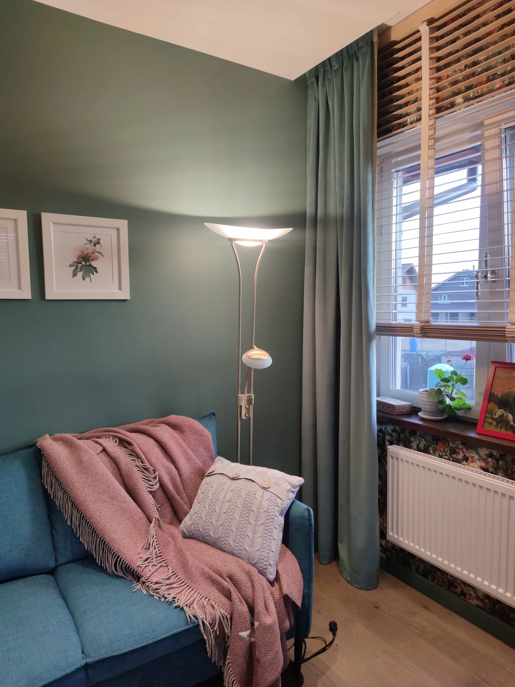
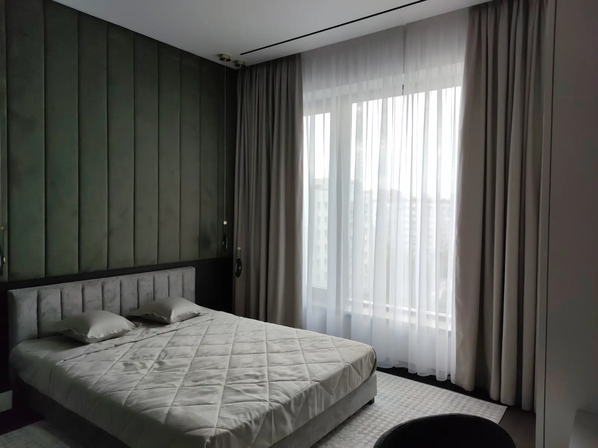
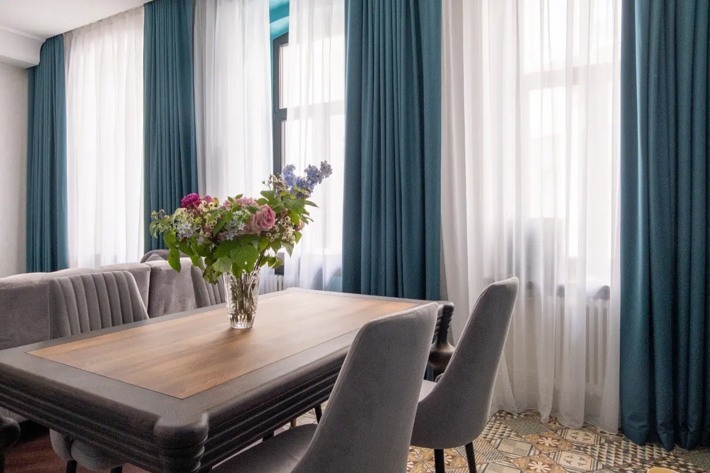
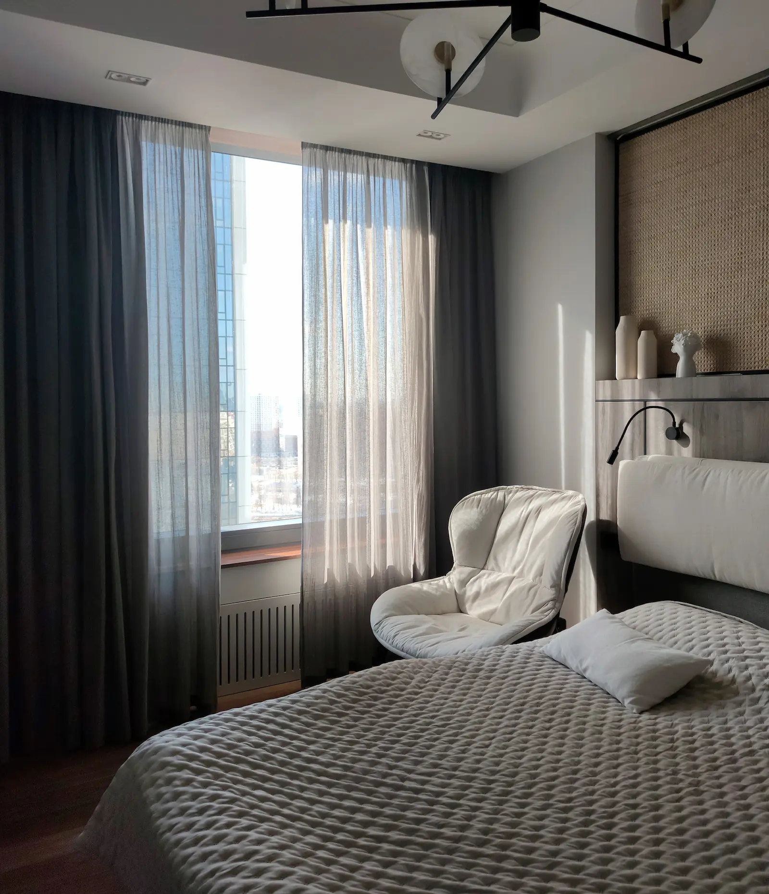
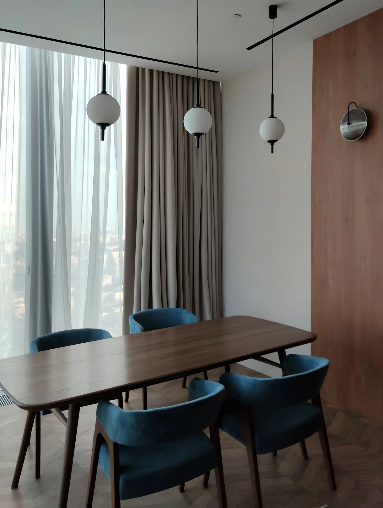

Спальня хозяйки
загородного дома
в Подмосковье
Интерьер этой спальни построен вокруг выразительной акцентной стены с цветочным рисунком за изголовьем кровати. Чтобы сохранить баланс и не перегружать пространство, для оформления окна мы выбрали бархатные шторы в тон основным стенам комнаты.
Мягкая фактура ткани добавляет интерьеру глубину и уют, а деликатные складки в верхней части штор делают композицию более лёгкой и элегантной. Такое решение позволяет текстилю стать частью общей атмосферы, не перетягивая внимание на себя.
В результате получилось спокойное, уютное пространство для отдыха, где каждый элемент работает на общую гармонию интерьера.

Квартира по дизайн-проекту
Удалённое согласование и точный подбор фактур
Работа над проектом велась в тесном взаимодействии с дизайнерами. Несмотря на удалённый формат согласования, особое внимание уделялось точности подбора тканей и их соответствию общей концепции интерьера.
Для достижения необходимого результата было проведено несколько выездов на объект с образцами тканей. Важно было не просто подобрать красивый материал, а добиться идеального сочетания с уже выбранными элементами интерьера: цветом стен, мебелью, отделочными материалами и текстилем.
Каждый оттенок и каждая фактура рассматривались в контексте всего пространства. Такой подход позволил создать гармоничное оформление окон, которое органично вписалось в интерьер и поддержало первоначальную идею дизайн-проекта. Результатом стала цельная и продуманная композиция, где текстиль стал естественным продолжением общей концепции пространства.

Квартира на Павелецкой.
Современный интерьер в сталинском доме
Квартира расположена в сталинском доме Москвы с высокими потолками и большими окнами. После масштабной реконструкции интерьер сохранил атмосферу исторического здания, но получил современные планировочные и технологические решения.
Пространство наполнено яркими акцентами, дизайнерским освещением и тщательно подобранными материалами. Поэтому текстиль должен был не перетягивать внимание на себя, а гармонично дополнять интерьер.
Для оформления окон были выбраны лаконичные портьеры глубокого бирюзового оттенка и воздушный тюль, мягко рассеивающий дневной свет. Текстиль поддерживает цветовую палитру интерьера и объединяет пространство в единую композицию.
Из-за большой высоты окон установлены электрокарнизы с удобным управлением, что делает использование штор максимально комфортным.

Спальня в эко-стиле
с льняным тюлем
Для этого проекта было важно сохранить спокойную, естественную атмосферу интерьера и подчеркнуть его эко-стилистику.
Основным акцентом стал фактурный льняной тюль. Натуральная ткань с лёгкой, слегка мятой текстурой красиво рассеивает дневной свет и создаёт ощущение лёгкости. На просвет особенно хорошо читается её неоднородная фактура, благодаря чему текстиль выглядит живым и естественным.
Для владельцев квартиры было важно сохранить ощущение уюта и мягкости пространства. Поэтому льняной тюль стал не просто декоративным элементом, а частью общей атмосферы интерьера, отражающей характер и образ жизни хозяев.
В качестве второго слоя были использованы шторы из димаута. Они обеспечивают необходимое затемнение для комфортного сна, оставаясь практически незаметными в дневное время. Такое решение позволило сохранить главный акцент на красоте льняного тюля и одновременно обеспечить высокий уровень комфорта.
В результате интерьер получил лёгкое, воздушное оформление, которое одинаково красиво выглядит как днём, так и вечером.

Апартаменты
в Москва-Сити
Текстильное оформление под сдачу в аренду
Проект для апартаментов в Москва-Сити, предназначенных для сдачи в аренду. Основной задачей было создать интерьер, который будет выглядеть дорого и привлекательно для будущих арендаторов, оставаясь при этом в рамках запланированного бюджета.
Особое внимание уделялось подбору тканей, оттенков и фактур. Несмотря на ограничения по бюджету, важно было добиться визуально цельного и качественного результата. Для этого ткани подбирались с учётом цвета стен, мебели и остальных текстильных элементов интерьера.
Качество пошива всегда остаётся неизменным независимо от выбранного бюджета. Именно аккуратное исполнение, внимание к деталям и грамотный подбор материалов позволяют создать интерьер, который выглядит значительно дороже своей стоимости.
В результате удалось найти баланс между практичностью, эстетикой и финансовыми рамками проекта, сохранив высокий уровень визуального восприятия пространства.